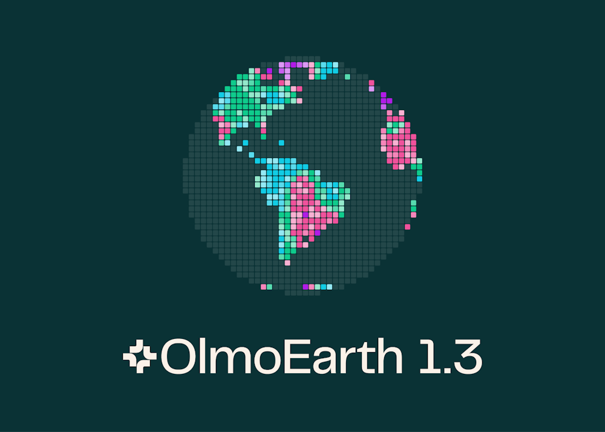
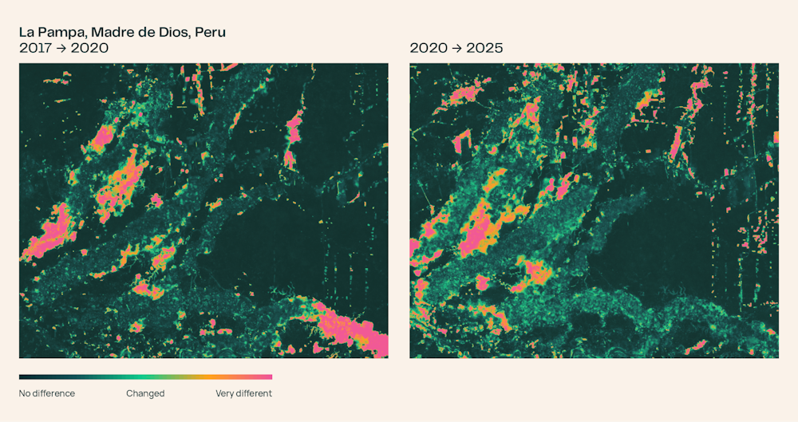
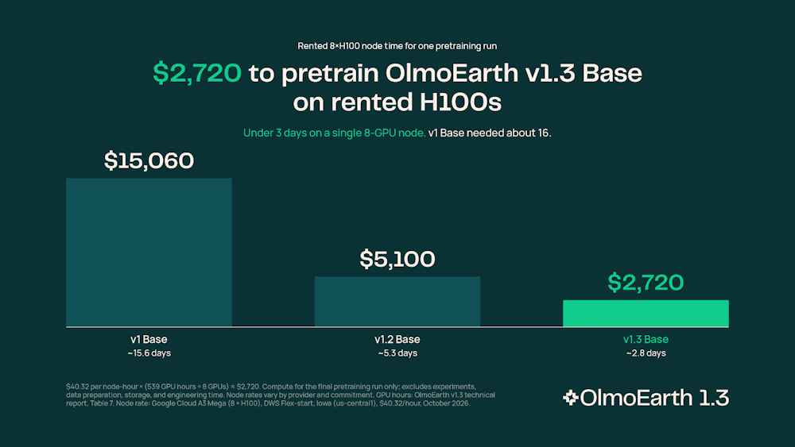

Executive Summary
이 글은 앨런 AI 연구소(Ai2)가 2026년 10월 22일 공개한 OlmoEarth v1.3을 읽는다. 연구소가 내놓은 것은 모델만이 아니다. 레이더와 다분광 위성이 1년 동안 찍은 관측을 10미터 칸마다 숫자 128개로 요약해 두고, 그 요약을 지구 전체 분량으로 미리 계산해 내려받을 수 있게 풀었다. 위성 사진을 받아 모델을 돌리는 일이 이미 끝나 있는 상태로 배포된 셈이다.
여섯 대륙에서 진행한 27개 평가 가운데 128차원판이 20개, 가벼운 64차원판이 18개에서 1위였다. 비교 대상은 구글의 AlphaEarth Foundations와 Tessera v2였다. 다만 지구 전체가 채워진 해는 2023년부터 2025년까지이고, 2017년부터 2022년까지는 일부 국가만 있다.
1절부터 4절까지는 연구소의 발표문과 외부 보도에 적힌 내용을 따라간다. 이 공개를 데이터를 미리 손질하는 판단에 겹쳐 읽는 5절은 이 글의 해석이다.
주요 수치
앞의 둘은 이 공개가 무엇을 손에 쥐여 주는지를, 뒤의 둘은 그것을 만드는 데 든 값과 아직 비어 있는 자리를 말한다.
출처: Ai2 공식 발표문 · Unite.ai (2026년 10월 22일)
128개
10미터 칸 하나의 숫자
위성 관측 1년치가 이만큼으로 줄어든다. 앞의 64개만 떼어 써도 된다
20 / 27
1위를 차지한 평가 수
여섯 대륙 27개 평가에서 128차원판 기준. 64차원판은 18개에서 앞섰다
53%
직전 판 대비 학습 시간
v1.2의 53%, 첫 판 v1의 18%. 마지막 학습을 다시 돌리는 값은 H100 임대 기준 약 2,720달러다
2017~2022
지구 전체가 아닌 구간
이 구간은 일부 국가만 있다. 전 지구가 채워진 해는 2023~2025년이다
10미터 칸 하나에 숫자 128개
지구를 찍은 위성 사진은 이미 넘칠 만큼 공개돼 있다. 유럽우주국의 센티널 위성과 미국의 랜드샛 위성이 같은 자리를 며칠에 한 번씩 지나가며 수십 년째 쌓아 왔고, 누구나 받을 수 있다. 문제는 받은 다음이다. 한 나라 넓이의 원본 영상만 해도 수 테라바이트이고, 거기서 무엇인가를 찾아내려면 그 영상을 통째로 읽는 모델을 돌려야 한다. 그래서 지금까지는 저장 공간과 GPU를 갖춘 쪽만 질문을 던질 수 있었다.
OlmoEarth v1.3이 바꾼 지점은 그 앞 단계다. 연구소는 레이더로 찍는 센티널-1과 색을 여러 갈래로 나눠 찍는 센티널-2·랜드샛의 1년치 관측을 모델에 먼저 통과시켜 두고, 10미터짜리 칸 하나마다 숫자 128개를 뽑아 놨다. 이 숫자 묶음을 임베딩이라 부른다. 그 자리가 어떤 곳인지를 모델이 요약해 적은 지문에 가깝다. 색과 질감과 계절에 따른 변화가 한꺼번에 눌려 들어가 있어서, 사람이 읽을 수는 없지만 기계끼리 비교하기에는 원본 사진보다 훨씬 편하다.

분량은 1년당 약 150테라바이트다. 지구 전체가 채워진 해는 2023년, 2024년, 2025년 세 해뿐이고, 2017년부터 2022년까지 여섯 해는 자료가 있는 나라와 없는 나라가 갈린다. 어떤 위성 영상에서 계산한 값인지는 20킬로미터짜리 타일마다, 해마다 따로 붙은 출처 표에 적혀 있다. 모델이 읽어 들인 센티널-1·센티널-2·랜드샛 장면이 공개 카탈로그 링크와 함께 나열된다. 요약된 숫자만 받아 쓰는 사람도 그 숫자가 어느 원본에서 나왔는지를 되짚어 볼 수 있다. 연구소는 공개 이유를 이렇게 적었다. 파운데이션 모델과 전 지구 임베딩은 만드는 데 돈이 많이 들고, 그 혜택이 모두에게 돌아가게 하려고 지구 전체를 대신 계산해 뒀다는 것이다.
라벨 몇 개면 지도가 나온다
미리 계산해 둔 숫자가 손에 있으면 할 일의 성격이 바뀐다. 작물 지도를 만들거나 토지 피복을 분류하거나 어느 구간이 달라졌는지 찾는 일이, 연구소의 표현대로 가벼운 모델링 문제가 된다. 수십 밴드짜리 시계열 영상을 읽는 대신 숫자 128개를 입력으로 받는 작은 분류기 하나를 학습시키면 되기 때문이다.
연구소가 같이 연 OlmoEarth Embeddings Explorer는 그 과정을 브라우저 안으로 옮겨 놨다. 계정도 설치도 필요 없다. 지도를 아무 데로나 옮겨 다니며 연도를 바꿔 끼우면 그 땅이 그사이 어떻게 달라졌는지가 보이고, 한 곳을 찍으면 그와 비슷해 보이는 다른 자리를 찾아 준다. 라벨이 붙은 점 몇 개를 찍으면 곧바로 작은 분류기를 학습시킨 뒤 결과를 GeoTIFF 파일로 내보낸다. 연구소는 라벨 한 줌으로 지역 전체를 분석할 수 있고 GPU가 필요 없다고 밝혔다.
지구 전체를 미리 계산하는 일 자체도 공짜는 아니다. 연구소는 그 값을 어떻게 낮췄는가. 읽는 해상도와 내보내는 해상도를 따로 뒀다. Unite.ai가 모델 카드에서 추린 수치로는, 영상을 20미터 단위로 읽어 들이되 결과는 10미터 단위로 내보내는 구성이 모델을 통째로 10미터에서 돌리는 것보다 7.7배 싸다. 창 하나당 연산량이 2,378 GMACs에서 308 GMACs로 줄어든다. 모델 자체는 파라미터 1억 2,800만 개짜리 비전 트랜스포머이고, 거기서 나온 768차원 토큰을 1,430만 개짜리 Perceiver와 10만 개짜리 선형 계층이 128차원으로 줄인다.
여기서 바뀐 것은 성능이 아니라 문턱이다. 같은 질문을 던지는 데 필요한 장비가 데이터센터에서 노트북 한 대로 내려왔다. 지방정부 담당자나 환경단체 분석가처럼 GPU 예산이 없는 쪽이 위성 자료로 답할 수 있는 질문의 목록이 그만큼 길어진다.
페루 라팜파, 가르치지 않고 짚은 금광
연구소가 발표문에서 보여 준 사례는 페루 마드레데디오스주의 라팜파다. 이 일대의 불법 금광은 2017년과 2018년에 정점을 찍으면서 탐보파타 국립보호구역 완충지대의 숲 1,200헥타르 넘는 면적을 걷어 냈다. 2019년 2월 페루 정부가 메르쿠리오 작전으로 대부분을 밀어냈고, 그 뒤로 남은 질문은 하나였다. 정말 그대로 잠잠했는가.
이 질문에 답하면서 연구소는 새 모델을 학습시키지 않았다. 금광이 어떻게 생겼는지 알려 주는 라벨도 쓰지 않았다. 한 일은 픽셀마다 해마다 계산해 둔 벡터를 꺼내 서로 견준 것뿐이다. 두 해의 숫자 묶음이 크게 벌어진 자리가 그사이에 크게 달라진 땅이다. 연구소는 이 대목을 "각 픽셀의 벡터를 해마다 견준다, 모델 학습은 필요 없다"고 적었다.
발표문이 적은 비교는 두 쌍이다. 2017년과 2020년을 견주면 채굴이 남동쪽으로 번져 가던 자리가 환하게 켜진다. 같은 비교를 2020년과 2025년으로 옮기면 신호가 달라진다. 단속의 효과가 임베딩 위에 그대로 보인다는 것이 연구소의 설명이다.

그 변화에 넓이를 붙여 전한 쪽은 실리콘앵글이다. 이 매체는 2016년과 2020년 사이에 크게 달라진 땅이 남쪽 광산대에서 동쪽으로 번지며 34제곱킬로미터였고, 2020년과 2024년 사이에는 그 면적이 9제곱킬로미터로 내려앉았다고 적었다. 다만 두 기록이 붙인 연도 라벨은 앞뒤로 한 해씩 어긋난다. 34와 9는 자로 잰 측정값이라기보다 단속 전후의 규모 차이로 읽는 쪽이 안전하다.
다만 숫자가 줄었다는 것이 상황이 끝났다는 뜻은 아니다. 연구소도 발표문에 뒷이야기를 같이 적었다. 2026년 8월 AP 보도에 따르면, 검찰이 채굴이 보호구역 경계를 넘어 탐보파타 안으로 들어온 것을 확인한 뒤 페루는 해군 순찰대를 다시 들여보냈다. 임베딩이 보여 주는 것은 어느 자리가 달라졌는가이고, 그 변화가 무엇이며 지금 어떻게 되고 있는지는 여전히 현장과 다른 기록이 말해 준다.
27개 평가 중 20개에서 1위, 학습비는 직전 판의 절반이다
전 지구 임베딩을 내놓은 곳은 Ai2가 처음이 아니다. 구글의 AlphaEarth Foundations가 먼저 나와 있고, 학계에서 나온 Tessera v2도 있다. 연구소는 이 둘을 비교 대상으로 세우고 여섯 대륙에 걸친 27개 평가를 돌렸다. 128차원판은 그중 20개에서 가장 높은 점수를 받았고, 절반 크기인 64차원판도 18개에서 앞섰다. 용량을 반으로 줄이면 무엇을 잃는가. 순위 두 칸이다. 저장 공간이 빠듯한 쪽은 가벼운 쪽을 골라도 된다.
평가 목록에는 연구소가 이번에 새로 만든 것도 들어 있다. 열대 지방 농사의 작물 종류를 가리는 PLANTEUR다. 프랑스 해외영토의 섬들을 무대로 삼아, 섬 하나를 통째로 빼고 나머지로 분류기를 학습시킨 뒤 빼 뒀던 섬에서 시험하는 방식으로 쟀다. 이렇게 재면 모델이 그 섬을 본 적 없는 상태에서 얼마나 버티는지가 드러난다. 128차원 임베딩이 24.9 mIoU를 받았다. 같은 조건에서 Tessera v2는 19.1, AlphaEarth Foundations는 15.8이었다. 열대 농지는 한 뙈기가 작고 구름이 자주 끼어 위성 자료로는 까다로운 축에 드는 대상이다.
| 모델 | PLANTEUR (mIoU) | 27개 평가 중 1위 |
|---|---|---|
| OlmoEarth v1.3 (128차원) | 24.9 | 20개 |
| OlmoEarth v1.3 (64차원) | — | 18개 |
| Tessera v2 | 19.1 | — |
| AlphaEarth Foundations | 15.8 | — |
27개 평가의 순위 집계는 Ai2 공식 발표문에 있다. PLANTEUR 점수 세 줄은 발표문 본문에는 없고 Unite.ai가 모델 카드에서 추려 전한 수치다. 빈칸은 해당 출처가 그 값을 적지 않았다.
학습에 든 값도 같이 공개됐다. v1.3은 역대 판 가운데 가장 싸게 학습한 판이다. 직전 판 v1.2가 쓴 계산 시간의 53%, 첫 판 v1의 18%만 썼고 탄소 배출도 각각 50%와 22% 수준이었다. 마지막 학습을 처음부터 다시 돌리는 데 드는 값은 H100 임대 기준으로 약 2,720달러라고 적혀 있다. 전 지구를 덮는 모델치고는 작은 액수인데, 그 뒤에 지구 전체 분량을 실제로 계산해 저장하는 비용이 따로 붙는다는 점은 같이 봐야 한다. 연구소가 자기 돈으로 치른 쪽이 바로 그 부분이다.

쓸 수 있는 범위에는 조건이 붙는다. 공개된 산출물은 OlmoEarth Artifact License를 따른다. v1과 v1.2에 붙었던 것과 같은 라이선스라고 발표문은 적었다. 어떤 용도가 막히는가. 발표문은 따로 풀어 쓰지 않았고, Unite.ai가 정리한 바로는 군사·국방 목적과 채굴 산업 용도의 사용이 제한된다. 받아서 쓰기 전에 용도가 걸리는지부터 확인해야 할 대목이다.
페블러스가 이 공개를 주목하는 이유
AI-Ready Data라는 말은 대개 데이터를 깨끗하게 정리해 둔 상태를 가리킨다. 이번 공개는 그 말을 한 걸음 더 밀고 간 사례다. 정리에서 멈추지 않고 모델을 한 번 통과시킨 결과까지 미리 만들어 두면, 다음 사람은 모델을 돌리는 데서 시작하지 않는다. 페루 사례가 그것을 보여 준다. 질문이 생긴 뒤에 학습을 시작한 것이 아니라, 이미 계산돼 있던 요약을 맞대 본 것으로 답이 나왔다.
그러면 우리가 가진 데이터 가운데 미리 계산해 둘 가치가 있는 것은 무엇인가. 전부 그렇게 할 수는 없으니 기준이 필요하다. 위성 임베딩이 값을 하는 이유를 뜯어 보면 세 가지 조건이 겹쳐 있다.
- 같은 데이터에 서로 다른 질문이 계속 들어온다. 작물 지도를 묻는 사람과 산림 파괴를 묻는 사람이 같은 영상을 쓴다. 질문마다 전처리를 다시 하지 않아도 되는 공통 구간이 있다는 뜻이다
- 요약이 질문보다 오래 산다. 2023년 땅의 상태를 적은 숫자는 내년에 들어올 질문에도 그대로 쓰인다. 반대로 질문이 바뀔 때마다 요약을 다시 만들어야 한다면 미리 계산해 둘 이유가 줄어든다
- 요약끼리 견주는 것만으로 답이 나오는 질문이 섞여 있다. 변화 탐지가 그렇다. 분류기를 학습시켜야 답이 나오는 질문만 있다면 미리 계산한 값이 주는 이득은 그만큼 작아진다
비어 있는 연도는 같은 이야기의 반대편이다. 공짜로 받을 수 있는 구간은 세 해뿐이고, 그 앞 여섯 해는 나라마다 사정이 다르다. 페루 사례가 2017년까지 거슬러 올라갈 수 있었던 것도 그 나라가 앞 구간을 채운 쪽에 들어 있었기 때문이다. 공개된 자료의 바닥이 2017년이라는 점은 3절에서 본 연도 라벨 차이와도 맞물린다. 실리콘앵글이 적은 2016년은 그 바닥보다 한 해 아래이고, 발표문이 적은 연도는 2017년이다. 다른 나라에서 같은 질문을 던지면 답이 없을 수 있다. 그런 자료를 쓰는 쪽은 그것이 어디까지 덮고 있는지를 먼저 확인해야 하고, 만드는 쪽은 덮지 못한 구간을 자료 옆에 함께 적어야 한다. 공백이 적혀 있지 않으면 쓰는 사람은 그것을 없는 것이 아니라 변화가 없는 것으로 읽는다.
Editor's Note
이번 공개에서 가장 오래 남을 숫자는 27개 평가 성적이 아닐지도 모른다. 벤치마크 순위는 다음 판에서 뒤집힌다. 구조는 그렇지 않다. 계산이 끝난 요약을 공유 자산으로 깔아 두면 그 위에서 묻는 비용이 통째로 내려간다. 데이터를 가진 조직이 다음에 물어야 할 것은 데이터를 공개할지 말지가 아니라, 어느 단계까지 계산해서 건넬지다.
여기까지 읽어 주셔서 감사하다. 이 글의 수치는 Ai2 공식 발표문과 실리콘앵글·Unite.ai 보도에서 직접 확인했다. 여러분의 자료에서는 어느 구간을 먼저 계산해 놓으면 두고두고 값을 할지, 그리고 그것을 막고 있는 것이 무엇인지 들려주시면 좋겠다.
(주)페블러스 데이터 커뮤니케이션팀
2026년 10월 23일
참고문헌
- 1.Ai2 (The Allen Institute for Artificial Intelligence). (2026). "OlmoEarth v1.3: State-of-the-art embeddings for the whole planet." Ai2 Blog.
- 2.Dotson, K. (2026). "Ai2 releases OlmoEarth v1.3 state-of-the-art AI-ready satellite embeddings for the whole planet." SiliconANGLE.
- 3.Reeve, J. (2026). "Ai2 Releases OlmoEarth V1.3 With Global 10M Satellite Embeddings." Unite.ai.